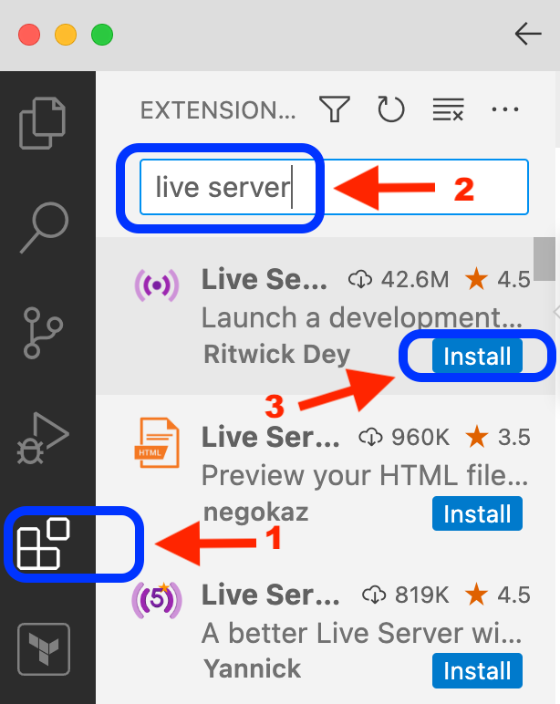
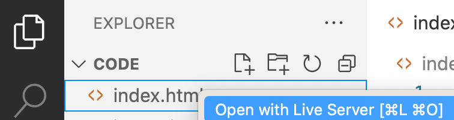

ITM 101 Week 3 - Create an HTML and Javascript Math Webpage
Using ChatGPT, create a simple webpage that adds two numbers together. It should use separate HTML and JavaScript files. Turn in the files for your website on Canvas once you have finished.
Create a file called index.html and paste in the HTML from ChatGPT.
Create a file called yourname.js (replace YOURNAME with your first and last name in all lowercase) to put the ChatGPT code into. EXAMPLE: If your name were Bob Jones, it should be bobjones.js
Test your code by opening Visual Studio Code. Install the Live Viewer extension by Ritwick Day (ask ChatGPT if you need help).

NOTE: Make sure to quit Visual Studio Code, then re-open it for these change to function.
Look at the page by right-clicking on the index.html file and select "open with live server."

Once you have completed the assignment, upload a copy of your files (index.html and yourname.js) and a screenshot of your webpage working to Canvas.